import torch
from torch import affine_grid_generator, nn
import mathIntroduction
The attention mechanism is arguably one of the most impactful innovations in the field of machine learning, if not the most. Its influence has extended beyond computer science, influencing many disciplines (AlphaFold, the field-changing model for protein structure prediction, is heavily dependent on the attention mechanism). As of this writing, the paper ‘Attention Is All You Need’, which introduced the transformer architecture based on attention mechanisms, has received over \(185,000\) citations.
To put that into perspective: the combined citation count of Darwin’s ‘On the Origin of Species’, Hubel and Wiesel’s seminal work on the visual system, and Chomsky’s ‘Syntactic Structures’, a foundational text in linguistics, is still less than half of ‘Attention Is All You Need’.
I still remember the first time that I encountered attention few years ago, it was during my first class of foundations of AI, and I found the idea of Query, Key and Values confusing and it took me a while to really grasp the core idea behind the attention mechanisms and why it works so well.
With this blog I aim to give you the insights that helped me understanding attention so that you can start build it yourself. Thus, I will first explain the core idea of attention, the difference between other representations and then I will implement it from scratch using a PyTorch and Einsum (a very cool library for linear algebra operation, to read it more see einsum is all you need
The Core Idea of Attention and Why It Works
At its heart, the attention mechanism is conceptually simple. Suppose you have a sequence of elements N (e.g, words in a sentence), and you want to understand how each element relates to every other. The idea is to compare their similarities and then assign weights to each element reflecting its importance relative to the others. We could say:
The meaning of each element is defined not in isolation, but by how strongly it relates to all other elements in the sequence.
To implement this idea, the input sequence \(S\) is transformed into three different embeddings: Queries (Q), Keys (K) and Values (V). Then Queries and Keys are compared to measure similarity, and Values are weighted by these similarities to produce the final context-aware representations.
Before we dive into the actual implementation of attention, it’s important to understand where it fits within the broader architecture of a Transformer. As shown in the original Attention Is All You Need paper, Transformers use a mechanism called multi-head attention, which means that the attention operation is applied multiple times in parallel.
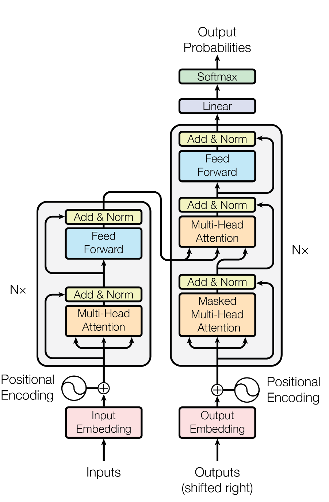
Each head produces its own context-aware representation of the input, and these are then concatenated and passed through additional layers. For simplicity, the diagram below, and the rest of this post, will focus on how a single attention head works in isolation.
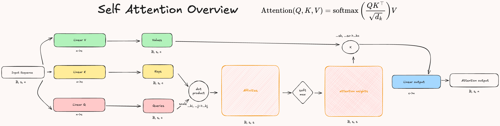
Now, this was actually the appropriate definition of ‘Self-attention’ as we are comparing the sequence with itself, there are other kinds of attention, but I believe that it’s helpful to start with self attention first as it is more intuitive and it’s the most used mechanism nowadays, for an overview of the different kinds of attention you can visit A General Survey on Attention Mechanisms in Deep Learning, where they offer a nice taxonomy of the various attention mechanisms.
What does really change between attention and MLP?
The main difference between attention and traditional architectures like MLPs is in how input information is processed. In an MLP, each input vector is transformed independently by the model’s weights. That is, the model learns a representation by projecting the input using a linear layer:
\[\text{MLP}: h = W^TX\]
Here \(X\) is the input vector, and \(W\) is a learnable weight matrix. This transformation does not take into account the other elements of the input sequence. To model relationships between inputs, earlier architectures like Recurrent Neural Networks (RNNs) introduced recurrence, allowing the model to incorporate previous context step-by-step.
In contrast, attention directly models the relationships between inputs by comparing them to one another after the linear projections.
\[\text{Attention}(Q, K, V): \text{softmax}(\frac{QK^T}{\sqrt{d_k}})V\]
As we have seen, this operation allows each token to dynamically attend to the most relevant parts of the sequence, producing contextualized representations that reflect interactions between the inputs.
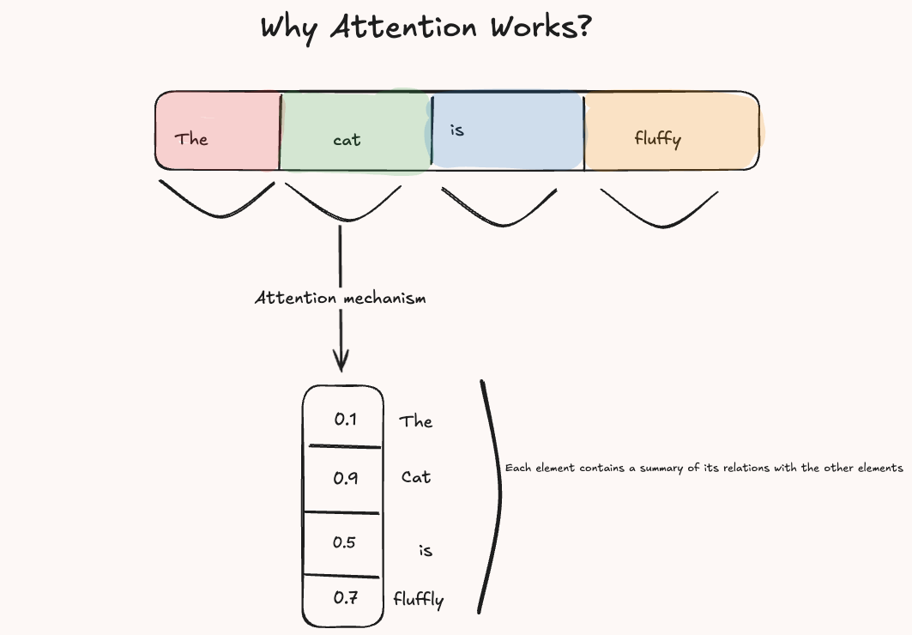
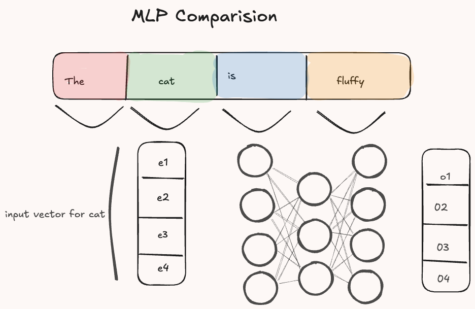
The difference is only in the operation after the linear transformations which allows to adjust the weights based on how to model input relations rather than input-weights relations.
Implementation
To develop an attention module, we only need to import a couple of python’s libraries, mostly to facilitate the backward pass during training, although if you are not familiar with backpropagation and how torch modules work under the hood, I strongly encourage you to try to implement some basics one yourself, see the Additional material for resources on this.
As we have seen, attention starts with the mapping of the input sequence (batch, n_tokens, dim_input) into three embeddings (Q, K, V) of shape: batch, n_tokens, dim_attention. This step is crucial as it’s the only one where there are trainable parameters other than in the output layer.
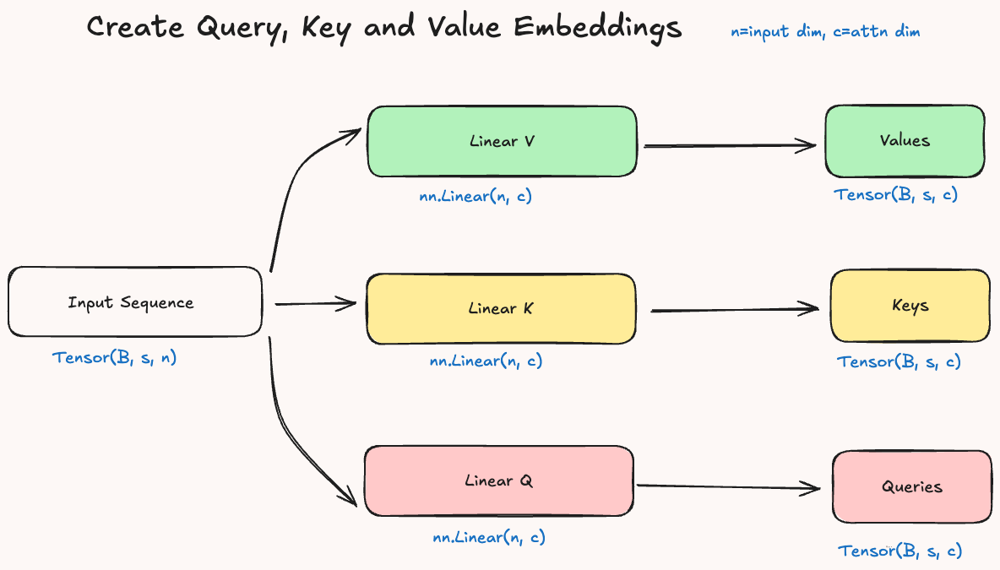
Next, we have to compute the affinities (similarity) between the query and key embeddings. We generate a matrix where each element of the sequence is compared to all the others and the values reflect the similarity between two elements as results of the dot product, which produces higher values for similar vectors.
In the code we can compute the dot product by using Einsum, basically given the query and key embedding \(Q\), \(K\) we compute: \(Q \cdot V = \sum^c_{i=1} q_i * v_i\). The output will be a matrix of shape: batch, dim_attention, dim_attention.
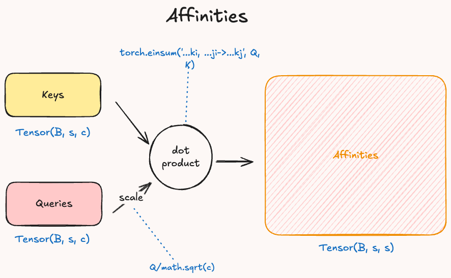
Then, it is important to convert our affinities to weights that we can use to scale the value embedding. To do so, we use the softmax function to convert the values of the matrix into a probability distribution. The softmax formula is: \(\sigma(\vec{z})_i = \frac{\exp(z_i)}{\sum^K_{j=1} \exp(z_j)}\).
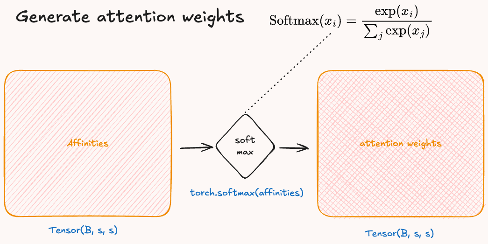
Finally we compute the attention values by scaling the value vector by the attention weights and we return the output after passing it through a linear to map the attention dimension back to the same value of the input dimension.
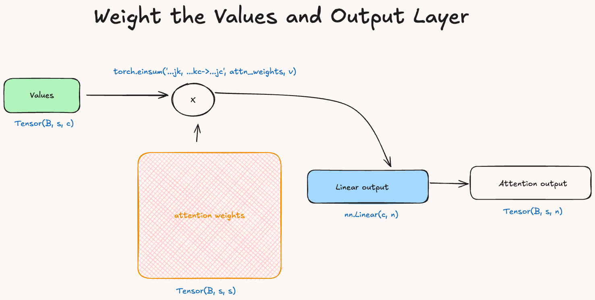
Now that we went through each step in detail we can put all of them together to built the initial diagram into a single python class called SelfAttentionModule. Below there is the full code to generate it.
# we generate a random input
x = torch.randn((12, 5, 10))
#we then create a class:
class SelfAttentionModule(nn.Module):
def __init__(self, x_in, c):
super().__init__()
self.c = c
# we define the three linear layers
self.linear_q = nn.Linear(x_in, c)
self.linear_k = nn.Linear(x_in, c)
self.linear_v = nn.Linear(x_in, c)
self.linear_o = nn.Linear(c, x_in)
def forward(self, x:torch.Tensor)->torch.Tensor:
# we apply the linear transformations
Q = self.linear_q(x)
# scale Q
Q = Q / math.sqrt(self.c)
K = self.linear_k(x)
V = self.linear_v(x)
# calculate affinities:
affinities = torch.einsum('...kj, ...zi->...kz',Q, K)
# convert to weights
attn_weights = torch.softmax(affinities, dim=-1)
# get the attn_values:
attn_values = torch.einsum('...kz, ...zc->...kc', attn_weights, V)
attn_values = self.linear_o(attn_values)
return attn_values, attn_weightsMasked Attention
Importantly, since attention is often used in next token prediction tasks, if we were using the full attention weights across the entire sequence, we’d allow each token to attend all future tokens, which would be like cheating. To prevent this, we apply a casual mask to the attention scores before computing the softmax. The mask will ensure that each token can only attend to the previous ones.
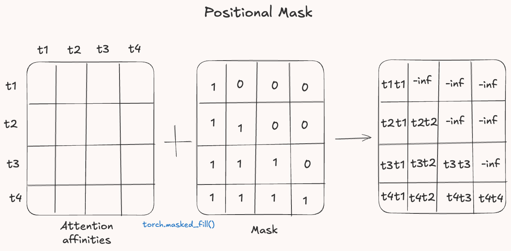
The mask is constructed by zerooing out the upper triangle of the attention matrix. These positions are then replaced with negatively infinity so that when passing through the softmax their contributions become zero. In PyTorch we can do it like this:
#generate a random tensor
affinities = torch.randn((4, 4))
#create the mask
mask = torch.tril(torch.ones_like(affinities)).bool()
#apply the mask
affinities = affinities.masked_fill(mask==0, float('-inf'))Positional Encoding in Attention
An interesting point that one could make at this stage is: how does attention keeps track of the order of the words? Well, it doesn’t. Indeed, our implementation of attention would give use the same results regardless of the input sequence order, because it treats the input as a set not a sequence.
To solve we can tell the model where each token is in the sequence. That is the job of positional encoding.
The core idea behind positional encoding is to add to the token embedding a positional embedding, which encodes its position in the sequence. In this was we give the model a sense of location even when all the words in a sentence are the same but the order is different. For an overview of positional encoding I recommend you to visit Dive into DL chapter about that.
Computational Efficiency on GPUs
The popularity of the attention mechanism is partly due to its extreme efficiency in processing input sequences. Specifically, attention allows us to compute a summary of the entire sequence for each element, in parallel. This makes it far more scalable than traditional sequence models like RNNs, which process inputs sequentially and are harder to parallelize.
Before diving into how attention is computed on a GPU, it’s helpful to understand how GPUs work in general. When we define a vector, such as vect_1, a special function called kernel is launched on the GPU. The kernel takes each element of the vector and assigns it to a separate thread, which is run by a core in the GPU.
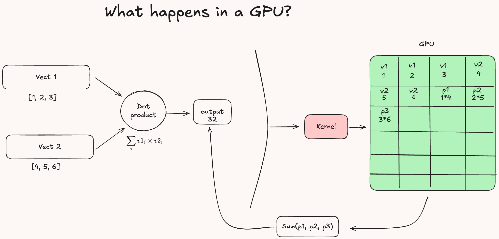
Now, if we compute the dot product between two vectors, the GPU doesn’t process it as one big operation. Instead, the kernel divides the computation into many smaller tasks, one for element, and assigns them to different cores. Each thread multiples one element from vect_1 with the corresponding element from the second vector. Finally, the results are combined using a reduction operation (sum), returning the final dot product.
This kind of parallelism is what gives GPUs their advantage over CPUs for task like attention, where operation across large sequences can be run simultaneously instead of one after the other.
When applying this to attention, it’s clear how much more efficient a forward pass can be compared to a recurrent neural network (RNN) processing the same input sequence. In attention, each element of the sequence can be handled in parallel because the computations for different positions are independent of one another. This allows the model to assign different parts of the attention mechanism to separate GPU cores, achieving high parallelism and speed. In contrast, an RNN must compute each step sequentially, since the output at each time step depends on the result from the previous one. This dependency makes it difficult to parallelize, significantly slowing down the forward pass.
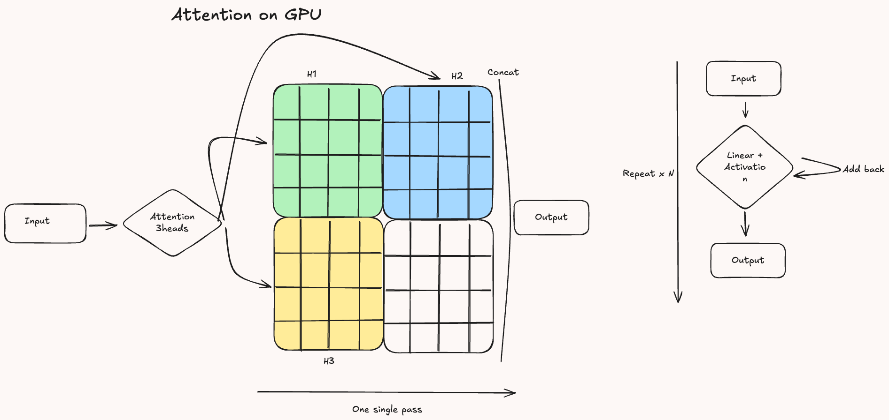
Additional Material
- The original paper: Attention is all you need
- To review vector similarities and dot product visit: Vector Similarity Explained
- Einsum blog: Einsum is all you need
- Course on Neural network basics from scratch: Neural Networks from Scratch in Pyton
- Another blog about Transformer from Scratch